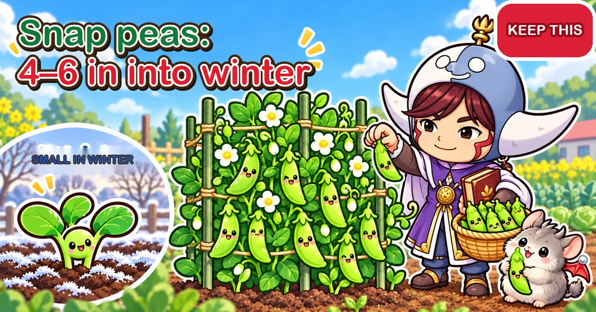
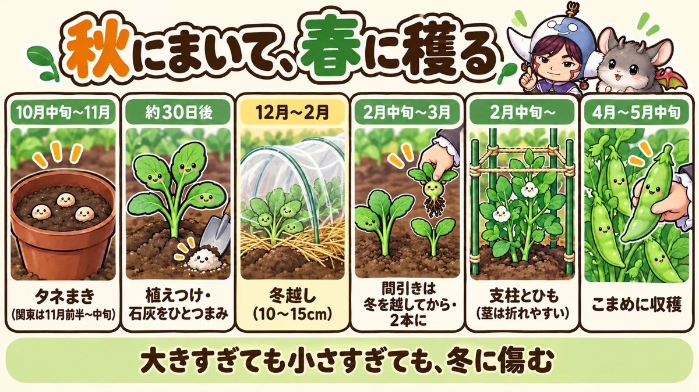
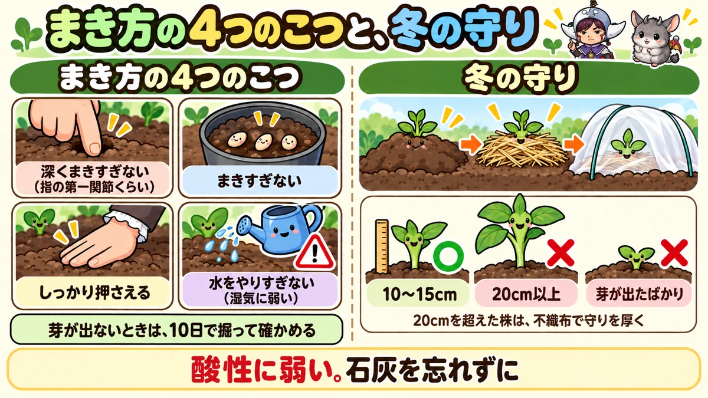
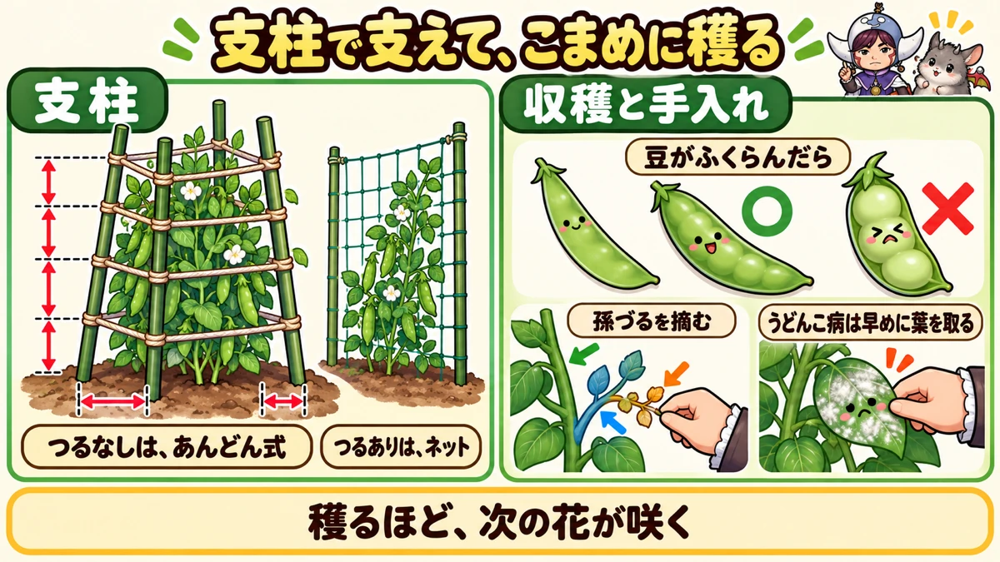

Snap peas: 4–6 inches tall going into winter Sowing, overwintering, supports and harvest

"They didn't survive the winter."
"Half of them never came up."
"In spring they ran riot and got mildew."
Hello, I'm Eiko. Eight years of growing vegetables organically and without pesticides, and a teaching licence in science.
Snap peas — sweet, crunchy, eaten pod and all — are a home-garden favourite, and they keep coming, which makes picking them a lovely job to share with children.
Autumn-sown peas are in the ground from autumn to late spring, and each stage has its own job. This article goes through them in order.
How to use this article. I garden in central Japan, roughly USDA zone 8b–9a, with the first frost in late November and the last in early spring. Autumn sowing needs a winter mild enough to overwinter young peas; elsewhere, sow in spring (see ⑨).
Basics. Sow: about 6 to 2 weeks before your first frost (in my area most growers aim for 2–4 weeks before). Go into winter at 4–6 in (10–15 cm). Thin to two per station after the coldest weeks. Supports up in late winter. Spacing: about 1 ft (30 cm). Germination: 1 week to 10 days. Height: about 2½–3 ft (80 cm–1 m) for bush types, nearly 6½ ft (2 m) for climbers.

What this diagram says （図解の文字）
- Sow in autumn, pick in spring (months for central Japan)
- "Mid-Oct to Nov: sowing (early to mid-Nov around Tokyo)" → "about 30 days later: planting out, a pinch of lime" → "Dec–Feb: overwintering (10–15 cm)" → "mid-Feb to Mar: thin after winter, to two" → "from mid-Feb: canes and string (stems snap easily)" → "Apr to mid-May: pick often"
- "Too big or too small, and winter damages them"
① What kind of crop it is
Peas are eaten three ways: mangetout (thin young pods), snap peas (pods with swollen peas, eaten whole), and shelling peas (just the peas). Snap peas are sweet and juicy, and especially popular.
They're sown in autumn and overwintered because a spell of cold makes them flower heavily in spring. They're fairly hardy — but grow too big before winter and they lose hardiness; go in too small and spring gets off to a late start.
Climbing or bush?
- Climbing: nearly 6½ ft (2 m) tall, heavier and longer cropping — but you need a frame and netting, and more space
- Bush (dwarf): about 3 ft (1 m), a smaller but ample crop for a household, easy to manage, fine in containers
For a first go, bush types are recommended. The packet says which it is. Look too for strains described as sweet, cold-hardy, or resistant to the powdery mildew that tends to strike at the end of the season.
② Soil: lime yes, fertiliser no
- Don't repeat. Leave 3–4 years after any legume
- Peas are especially sensitive to acid soil — even among legumes. Lime the whole bed; shell-based lime can be sown into straight away
- They dislike wet. In poorly drained ground roots rot and mildew is more likely
- Little or no base fertiliser. With it, they grow too big in autumn and overwinter poorly. Many growers start with lime alone. Legumes get nitrogen from the air with their root bacteria; leaf mould and crop residues help those bacteria work
- A bed that held a fed crop suits them — one grower follows tomatoes with snap peas
- Mulch warms the soil and helps growth, but isn't essential
③ Sowing
Long, warm autumns are now common, and some growers suggest sowing a little later than the traditional date. Seeds germinate best at about 64–68°F (18–20°C), but will come up — slowly — at around 50°F (10°C).
- Direct: 4 seeds per station, later thinned to two
- In pots: 3 seeds in a 3½ in (9 cm) pot, grown on for about 30 days to 3–4 true leaves, then planted out
Pot-raised plants are handy spares if some stations fail or get too big — worth making even when you sow direct.
Four rules for sowing
- Not too deep: about the depth of your fingertip to the first joint
- Not too many per hole
- Firm it properly after sowing
- Not too much water — peas dislike wet
For pots: fill to about 80% with seed compost, poke three fingertip-deep holes, a seed in each, cover, press lightly, water, and keep them under the eaves out of the rain. Ventilate if they're in a greenhouse. Seeds may be dyed blue or red — that's a treatment coating or a warning not to eat them.
Nothing after 10 days?
They should be up in a week to ten days. If not, gently dig and look. A fine root and an upward shoot mean it's nearly there — wait. Rotten, or gone (birds)? Re-sow straight away. A late re-sowing benefits from netting or polythene over it for warmth, though late plants tend to go into winter small. Or buy plants: under 4 in (10 cm), with short gaps between the leaf joints.

What this diagram says （図解の文字）
- Four sowing rules, and winter protection
- "Four rules": "not too deep (to the first finger joint)" ／ "not too many" ／ "firm it well" ／ "not too much water (they dislike wet)" ／ "no shoots? dig and check at 10 days"
- "Winter protection": earth up → straw → tunnel
- ◯ "10–15 cm" ／ ✕ "20 cm or more" ／ ✕ "only just germinated" — "plants over 20 cm need extra protection with fleece"
- "They hate acid soil. Don't forget the lime"
④ Planting out
- Put a pinch of lime in each hole and a little soil back over it
- Water the plants in their pots first
- Plant without breaking the rootball, draw soil round, press lightly, water
- About 1 ft (30 cm) apart; for two rows, one grower leaves about 18 in (45 cm) between them
With three seeds in a pot, snip one off at 2–3 true leaves so you plant two. After planting, don't water unless they're really flagging — wet roots rot.
⑤ Through the winter
The ideal size going into winter is 4–6 in (10–15 cm). Over 6 in they're more easily damaged; plants that have only just germinated get a late start in spring and crop less. Sowing on time is the best way to hit the target.
The usual damage comes from dawn frosts and cold wind. Around Tokyo, frosts typically run from late December to mid-February; check your own frost dates and have protection on before they start.
- Earth up first as it gets cold: steadier plants, and closed-up mulch holes keep the soil warmer
- Straw, dry grass or rice husks round the base against cold and drying
- A tunnel of insect netting or shade cloth (insects aren't an issue in winter)
- In colder areas, or for plants over 8 in (20 cm), a warmer fleece tunnel
- The "lantern": four canes round the plant, string round them, fleece wrapped round that as a windbreak
- Before a severe cold snap or snow, add another layer of fleece
Water and feed: little water needed — but in a long dry spell, a light watering every week or two on a sunny day. No winter feeding unless the leaves are pale; then a very little bokashi.
Plants that got too big just need extra protection. Unlike broad beans, peas don't respond well to having their tips cut to keep them low.
⑥ Thinning — after winter
However many come up per station, don't thin until winter's over. Several together hold each other up in the wind, and if the cold kills one, there are others.
Once the worst cold has passed, thin to two per station. Growers' timings vary from late winter to early spring. Too early and the ones you keep may still be killed by cold; too late and the stems tangle so you can't thin cleanly. Left at 3–4 per station, they tangle, air can't move, mildew follows and pods set poorly. If they're already tangled, cut the extras at the base with scissors rather than pulling.
The gap down the middle of the bed is a good spot for spinach — it grows nicely under the same winter covers.
⑦ Supports
As winter eases, snap peas suddenly shoot up. Put supports up in late winter, before you need them. The stems are surprisingly brittle and snap in the wind. Late supports also mean stems sprawling on the ground — mud splash, damp, and mildew.
Bush types: the "lantern"
- Four canes, 4–6 in (10–15 cm) from the plants — too far and they don't support in wind, too close and you cut roots
- Angle them slightly outward and push them in about 1 ft (30 cm) deep — when you tighten the string, they pull upright
- First string about 8 in (20 cm) up, then another tier every 6–8 in (15–20 cm) as they grow, so the stems stay inside
Climbing types: netting
Canes with cucumber-style netting for the stems to climb. Easier to manage and pick, but more work to set up.

What this diagram says （図解の文字）
- Support them, and pick often
- "Supports" — "bush types: the lantern" ／ "climbing types: netting"
- "Harvest and care" — "once the peas have swollen": ◯ plump ／ ✕ overgrown
- "Pinch out the third-level side shoots" ／ "powdery mildew: remove the leaves early"
- "The more you pick, the more flowers follow"
⑧ Spring care
- Pinch out third-level shoots. Like cucumbers, peas make main stems, side shoots and side shoots of side shoots. The third level adds crowding more than crop
- Weed while weeds are small. Tall weeds shade the peas, harbour pests and encourage mildew
- Add string tiers early, about every 6 in (15 cm), before the stems flop over the top. Knot them firmly so they don't slip
- Strip lower leaves that are crowded or yellowed by winter
- For bigger pods, one grower removes the weak, spindly shoots from the base once plants reach about 20 in (50 cm). Pods got bigger, but the total probably dropped a little — in a home garden most people leave them
- Water sparingly. Flowering and pod set need moisture, but spring is usually damp — overwatering damages roots and invites disease
- Keep air moving: thin properly, train upward
Feeding — growers really disagree
- View 1: first feed as the stems start growing in early spring, then at flowering and at pod set
- View 2: feed in midwinter, by late winter at the latest, and never after that — nitrogen then gives all leaves and stems and no flowers
Both use very little: about 10 ml of chicken manure or a pinch of bokashi per plant. Both agree that overfeeding is the biggest mistake. Plants that got big before winter should skip the early feed.
Diseases and pests
Powdery mildew — white powder on leaves and stems, starting low — is the classic late-season problem. Remove white leaves early; cut out finished stems with no flowers at the base; thin out the thinnest stems; a weak bicarbonate of soda spray slows it a little. You won't cure it — aim to slow it and keep picking.
Yellow leaves in winter or spring can be:
- Virus, usually carried by aphids — pull and remove suspect plants with aphids on them
- Hunger — pale all over: a little bokashi and lime, earthed up lightly
- Too wet or too dry
- Cold — repeated frost and wind
Yellow leaves on aphid-free plants can simply be snipped off. Aphids do visit peas, but less than broad beans — mostly low down on crowded plants in spring. Leaf miners may leave white trails.
No flowers?
Most likely not enough cold. Also look at the gaps between leaf joints: about 2–2½ in (5–6 cm) is healthy, with a flower at each joint. Much longer gaps suggest too much fertiliser or water.
⑨ Harvest
Autumn-sown peas start cropping around your last frost and carry on for about six weeks. Unlike mangetout, snap peas are picked once the peas inside have swollen and the pod is plump and firm.
Pick often. Swelling peas takes a lot from the plant. Leave pods to fatten fully and the plant switches to "job done" — fewer new flowers. Pick at the right size, again and again, and the plant keeps going. One grower checked every three days at the peak.
When the plants yellow from the base upward, it's time to clear them. Afterwards, tomato- or aubergine-family crops, or cucumbers and bitter gourd follow well — never another legume.
⑩ Containers and spring sowing
- Bush types grow well in containers. Fill to 80% (½–¾ in below the rim) and tap level
- Press the sowing spot, lay seeds ½–¾ in (1–2 cm) apart, push in about ½ in (1 cm), cover, press gently, water until it drains
- They reach 28–32 in (70–80 cm): a ring-type plant support (the kind used for morning glories) works well. In the cold, hardly any watering
Spring sowing works if you missed autumn or lost plants over winter: sow about 4–7 weeks before your last frost, warmed with mulch, fleece and a polythene tunnel (or in pots somewhere warm). Harvest starts about two weeks later than autumn-sown and the crop is smaller, since they've missed the winter cold. Spring plants from a garden centre are another fallback.
⑪ Where growers disagree, and common mistakes
- Sowing date: different growers in the same region named dates a week or so apart. All aim for the same target: 4–6 in tall at the start of winter
- When to thin: late winter to early spring — after the worst cold, before the stems tangle
- Netting in autumn: some skip it ("not many pests"); others tunnel straight after planting. The tunnel doubles as winter protection
- Sown early, damaged in winter → up to 1 ft (30 cm) in a warm autumn, then frost-hit. Sow on time, keep spares
- Sown late, too small → slow spring, lower crop. Warm late sowings
- Several left per station → tangling, mildew, poor set. Two per station after winter
- Snapped stems → supports up in late winter
- Picked too late → tough pods and a tired plant that stops early
Science bit: three whys 🔬
Why the "just right" winter size? A spell of cold readies the plant to flower in spring — hence autumn sowing. But a big plant has soft, exposed growth that frost damages, while a tiny one has too little to build on.
Why so sensitive to acid soil? Peas team up with root bacteria to use nitrogen from the air. In acid soil the roots grow poorly and that partnership can't work properly.
Why does picking often keep them cropping? A plant flowers and fruits to leave offspring. Let the peas mature fully and it behaves as if the job's done, slowing new flowers. Keep picking and it keeps trying.
To sum up
- ✅ Bush types for a first try
- ✅ Lime always; little or no base fertiliser
- ✅ Germination in 7–10 days; if not, dig, look, re-sow
- ✅ 4–6 in going into winter; earth up, straw, netting or fleece
- ✅ Don't thin until after winter — then two per station
- ✅ Supports in late winter; the stems snap easily
- ✅ Pinch third-level shoots, water sparingly, feed very lightly
- ✅ Remove mildewed leaves early, keep air moving
- ✅ Pick often once the peas swell
Get them into winter at just the right size, and snap peas reward you with armfuls of pods in spring. Check your local sowing date on the packet and start there
Thank you for reading!